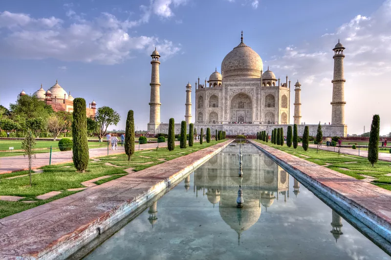

Wondering which historical monuments of India are the most popular with tourists? India has 116 ticketed monuments in 19 states, managed by the Archeological Survey of India. Out of the 116 monuments, 17 monuments are located in Uttar Pradesh, 16 are in Maharashtra, 12 are in Karnataka, 10 are in Delhi, eight are in Madhya Pradesh, seven are in Tamil Nadu, and six are in Gujarat.
According to information provided by the Indian Ministry of Culture to the parliament, the Taj Mahal sits in first position, way ahead of the other monuments. (The Golden Temple is the only place in India to rival its number of visitors). However, what's particularly notable is that the Red Fort in Delhi has overtaken the Qutub Minar as the second-most visited monument in India. What's also interesting is that some of the monuments, such as the Charminar in Hyderabad, have relatively high footfall but low ticket revenue indicating that they're visited predominantly by Indian tourists rather foreigners (who pay a lot more per ticket).
The Taj Mahal will never lose its charm. Not only is it India's most recognized monument, it's also one of the Seven Wonders of the World. Dating back to 1630, it looms like a fairy-tale from the banks of the Yamuna River.  The Taj Mahal is actually a tomb that contains the body of Mumtaz Mahal -- the wife of Mughal emperor Shah Jahan. He had it built as an ode to his love for her. It's made out of marble and took 22 years and around 20 000 workers to complete. For most people, a visit to India is incomplete without seeing it. A significant increase in ticket price for Indian citizens at the end of 2018 has boosted revenue from ticket sales. This increase aims to limit visitor numbers in order to preserve the monument.
Delhi's most famous monument, the Red Fort stands as a powerful reminder of the Mughal emperors who ruled India. The fort is more than 350 years old. It has withstood the turbulent trials and tribulations of time—and attack—to be the setting of some of India's most important historical events that shaped the country. The fort's Old Delhi location, opposite Chandni Chowk, is fascinating as well. A sound and light show is held there in the evenings. Recent restoration of the shopfronts in the fort's Meena Bazaar and the addition of a new museum complex dedicated to India's freedom fighters has drawn more local Indian visitors, thus increasing footfall at the fort.